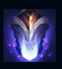

Sylas
| Sylas The Unshackled | |
|---|---|
| Release date | 25.01.2019 |
| Class | Burst |
| Positions | Top |
| Resource | Mana |
| Range type | Milee |
| Adaptive type | Magic |
| Base statistics | |||
| Health | 525 – 2480 | Mana | 280-1470 |
| Health regen. | 9 – 24.3 |
Mana regen. | 7-20.6 |
| Armor | 38 – 70 | Attack damage | 52 – 99.6 |
| Magic resist. | 30 – 38.5 | Crit. damage | 175% |
| Move. speed | 335 | Attack range | 175 |
Născut într-un cartier sărac al capitalei Demaciei, Sylas din Dregbourne este acum simbolul părții întunecate a Mărețului Oraș. Pe când era copil, capacitatea lui de a identifica persoanele cu puteri magice a captat atenția faimoșilor vânători de magi; în cele din urmă, aceștia l-au încătușat, după ce și-a folosit puterea împotriva lor. După ce a evadat, Sylas s-a transformat într-un revoluționar neînduplecat, care se folosește de forțele magice ale celor din jur pentru a distruge regatul pe care odinioară îl slujea... iar ceata lui de magi devine tot mai numeroasă pe zi ce trece. |  |
EXPLOZIE DE PETRICITĂ După ce folosește o vrajă, Sylas stochează un cumul de ''Explozie de petricită''. Atacurile de bază ale lui Sylas consumă un cumul și învârt lanțurile energizate în jurul lui, provocându-le daune magice bonus inamicilor loviți. Cât timp Sylas are un cumul de ''Explozie de petricită'', primește un bonus la viteza de atac. |
||
|---|---|---|---|---|
ATACUL LANȚURILOR Sylas își aruncă arma ca pe un bumerang, provocând daune și la dus și la întors. |
||||
UCIGAȘUL DE REGI/span> Sylas se avântă spre un inamic și îl lovește, provocându-i daune în funcție de viața lipsă. Dacă folosește abilitatea împotriva unui campion inamic, Sylas se vindecă. |
||||
| EVADARE / RĂPIRE Sylas se avântă spre un inamic și îl lovește, provocându-i daune în funcție de viața lipsă. Dacă folosește abilitatea împotriva unui campion inamic, Sylas se vindecă. |
||||
JAF Sylas fură abilitatea supremă a unui inamic, pe care o poate folosi apoi cum vrea. |